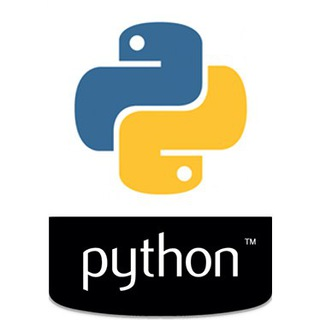

pro.python, propython on TGViewer

pro.python
t.me/propython
Сообщество разработчиков под Python
https://telegram.me/joinchat/A7kPxzx_o8HpyxsxTskU7g
Участник
@proDOT
⚠️ Оффтоп ->
@flood
❌Переход на личности
❌Троллинг
❌Реклама
❌HH (вакансии)